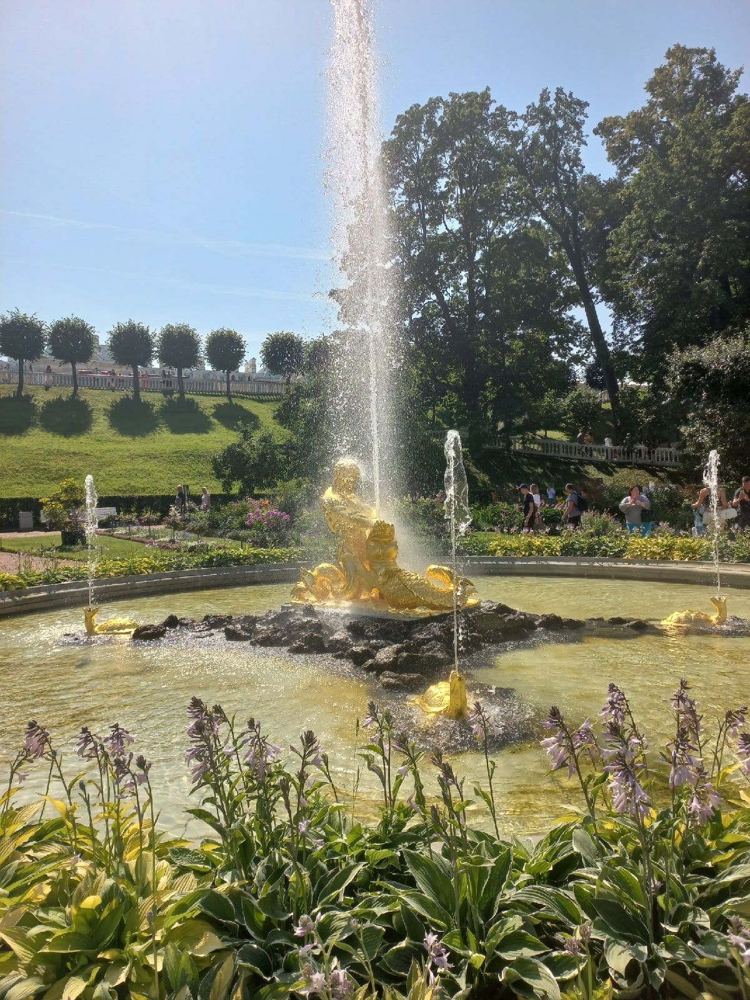
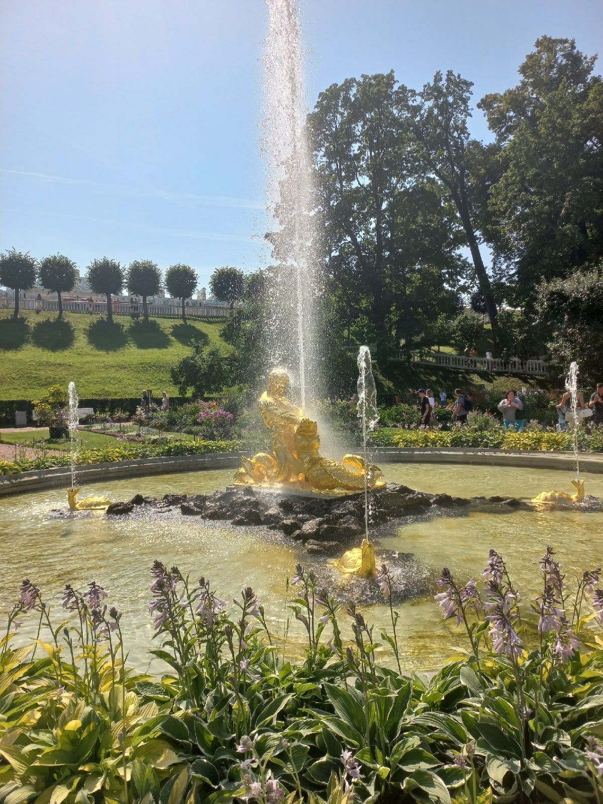

Куда сходить: внутри города
Посещение Эрмитажа
Эрмитаж — один из крупнейших музеев мира. Здесь можно увидеть потрясающую коллекцию произведений искусства, включая картины, скульптуры и уникальные исторические экспонаты. Не пропустите этот культурный центр!
Прогулка по Неве
Прогулка по реке Неве на катере — это прекрасный способ увидеть Санкт-Петербург с другой стороны. Вы сможете насладиться видами знаменитых мостов и дворцов.
Поездка на Петропавловскую крепость
Петропавловская крепость является историческим центром города. Здесь находится одна из самых известных церквей — Петропавловский собор, где захоронены российские императоры.
Петергоф
 

Екатерининский дворец
Спас на крови
Казанский кафедральный собор
Крейсер Аврора
Куда сходить: загородом
Карелия: парк